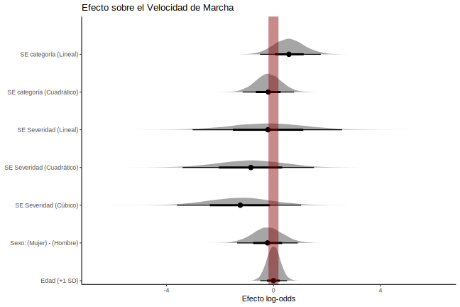

Característica |
Global |
Sexo |
|||
|---|---|---|---|---|---|
N = 77 1 |
Hombre |
Mujer |
Difference 3 |
95% CI 3,4 |
|
| Sexo | |||||
| Hombre | 17 (22%) | ||||
| Mujer | 60 (78%) | ||||
| Edad | 70.0 ± 6.4 | 72.3 ± 5.0 | 69.3 ± 6.6 | 0.52 | -0.03, 1.1 |
| Categoría SE | |||||
| Típico | 43 (59%) | 12 (75%) | 31 (54%) | ||
| Winter Blues | 17 (23%) | 3 (19%) | 14 (25%) | ||
| SAD | 13 (18%) | 1 (6.3%) | 12 (21%) | ||
| Severidad SE | |||||
| No es problema | 61 (79%) | 15 (88%) | 46 (77%) | ||
| Leve | 6 (7.8%) | 1 (5.9%) | 5 (8.3%) | ||
| Moderado | 3 (3.9%) | 0 (0%) | 3 (5.0%) | ||
| Importante | 3 (3.9%) | 0 (0%) | 3 (5.0%) | ||
| Severo | 3 (3.9%) | 1 (5.9%) | 2 (3.3%) | ||
| Grave | 1 (1.3%) | 0 (0%) | 1 (1.7%) | ||
| Puntaje total SPPB | 11.4 ± 3.8 | 10.8 ± 4.8 | 11.6 ± 3.5 | -0.19 | -0.73, 0.35 |
| Puntaje PSS | 18.8 ± 7.5 | 21.1 ± 6.5 | 18.1 ± 7.7 | 0.43 | -0.11, 0.97 |
| 1
n (%); Media ± DE |
|||||
| 2
Media ± DE; n (%) |
|||||
| 3
Standardized Mean Difference |
|||||
| 4
CI = Intervalo de confianza |
|||||
1 Análisis Estadístico
1.1 Descriptivos
Para los estadísticos descriptivos se reportaron la media y la desviación estándar (media ± sd) para las variables continuas, y la frecuencia absoluta (n) y relativa (%) para las variables categóricas.
1.2 Marco de análisis
Utilizamos un marco bayesiano para explorar las complejas interacciones entre factores clave asociados con el dolor no oncológico. Los modelos bayesianos son preferibles a los métodos frecuentistas tradicionales porque pueden cuantificar la incertidumbre y estimar los parámetros del modelo de forma más exhaustiva. Además, la inferencia bayesiana permite la inclusión de conocimientos previos sobre los parámetros del modelo, lo que posibilita la integración de hallazgos existentes e investigaciones anteriores. El marco bayesiano proporciona distribuciones posteriores que permiten una interpretación probabilística de las estimaciones de los parámetros con intervalos creíbles que reflejan la incertidumbre de los mismos.
Para evaluar cómo la sensibilidad estacional afecta la aptitud física y el estrés percibido en personas mayores, se desarrollaron tres modelos lineales generalizados bayesianos. Estos modelos se utilizaron para analizar el efecto de dichas variables, ajustando por la influencia de otros factores de confusión, dichamente HRV, sexo y edad. Las variables numéricas fueron estandarizadas para que la magnitud de los efectos reportados en los madelos gausianos fuera en unidades de desviación estándar y fueran directamente comparables entre si.
1.3 Sensibilidad estacional y Estrés percibido
Para evaluar el efecto de la sensibilidad estacional sobre el estrés percibido, utilizamos un modelo gausiano bayesiano, parametrizado según la Ecuación 1.
\[ \begin{aligned} y_i \mid X_i &\sim \mathcal{N}\left(\mu_i, \sigma_i\right) \\ \mu_i &= \beta_0 + \sum_{j = 1}^{p}{\beta_{j} \cdot X_{ij}} \\ \sigma_i &= \gamma_0 + \gamma_{1} \cdot \text{sexo}_i + \gamma_{2} \cdot \text{edad}_i \end{aligned} \tag{1}\]
En este modelo, los parámetros distribucionales (\(\mu_i\), \(\sigma_i\)), que ajustan la forma de la variable respuesta (\(y_i\)), se estimaron como la combinación lineal del intercepto (\(\beta_0\) para \(\mu_i\), y \(\gamma_0\) para \(\sigma_i\)) y los coeficientes usados para modelar la varianza (\(\gamma_1\), \(\gamma_2\)) y la media (\(\beta_{j}\)) de las variables independientes (\(X_{ij}\)).
1.4 Sensibilidad estacional y Aptitud física
Los constituyentes de la aptitud física, reportada como una variable ordinal, se modeló utilizando un modelo de regresión ordinal bayesiano. Este modelo permitió evaluar la probabilidad acumulada de cada nivel de aptitud física para cada dominio, condicionado a las variables de interés, y se parametrizó según la Ecuación 2.
\[ \begin{aligned} \text{logit}~P(Y \leq k | X_i) &= \alpha_k - \eta_i \\ \eta_i &= \sum_{j=1}^{p} \beta_j X_{ij} \end{aligned} \tag{2}\]
Donde \(\alpha_k\) son los umbrales específicos para cada nivel de aptitud física de cada dominio \(k\), y \(\beta_j\) son los coeficientes de las variables independientes \(X_{ij}\). Los umbrales \(\alpha_k\) se ordenan como parámetros del modelo: \(\alpha_0 = -\infty < \alpha_1 < \cdots < \alpha_{k} = \infty\).
1.5 Priors e Hiperparámetros
Para los coeficientes lineales (\(\beta\), \(\gamma\)), se eligieron priors con un efecto regularizador sobre los efectos principales, basados en una distribución normal centrados en cero y con una desviación estandar de 10, (i.e., \(\beta \sim \mathcal{N}(0,10)\)), limitando el efecto de observaciones influyentes y mejorando la convergencia de los modelos. Este mismo prior se utilizó para el efecto de los coeficientes que modelan la varianza de las variables respuesta (\(\gamma \sim \mathcal{N}(0,10)\)).
Para la estimación de los modelos, se usó el algoritmo No-U-Turn, variante del algoritmo Monte Carlo Hamiltoniano, por medio del paquete brms (v2.21.0) y rstan (v2.32.6). Los parámetros del algoritmo fueron 5 cadenas de Markov, 2000 iteraciones iniciales de preparación y 2000 iteraciones efectivas por cadena (10 mil en total). ## Reporte de Indices
Siguiendo el marco Sequential Effect eXistence and sIgnificance Testing (SEXIT) para describir los efectos a partir de modelos bayesianos (Makowski et al. 2019), se comunicaron la mediana y el IC95% (utilizando el intervalo de mayor densidad) como medida de centralidad e incertidumbre, la probabilidad de dirección (pd) como medida de existencia, la proporción de la distribución de probabilidad posterior del signo de la mediana que cae fuera de la región de equivalencia práctica (ROPE) como medida de significación práctica (ps), estimada como una décima parte (1/10 = 0. 1) de la DE de la variable de respuesta, y el factor de Bayes (BF10) utilizando la relación de densidad de Savage-Dickey contra el punto nulo que indica si el valor nulo se ha vuelto menos o más probable dados los datos observados (Heck 2019), utilizando esto como una medida de la magnitud absoluta de la evidencia a favor o en contra de la hipótesis nula (de no efecto). Teniendo en cuenta que ROPE, y por tanto ps, son sensibles a la escala a nivel de predictor, se estandarizó la edad, así como los puntajes obtenidos de los cuestionarios.
Para la interpretación de BF hemos considerado: BF = 1, ninguna evidencia; 1 < BF <= 3, anecdótico; 3 < BF <= 10, moderado; 10 < BF <= 30, fuerte; 30 < BF <= 100, muy fuerte; y BF > 100, como evidencia extrema (Jeffreys 1998). Para la proporción de la posterior en el ROPE consideramos: < 1%, significativo; < 2,5%, probablemente significativo; ≤ 97,5% & ≥ 2,5%, significación indecisa; > 97,5%, probablemente insignificante; > 99%, insignificante (Makowski et al. 2019).
1.6 Convergencia
La convergencia y estabilidad del muestreo bayesiano se ha evaluado mediante R-hat, que debe ser inferior a 1,01 (Vehtari et al. 2019), el tamaño efectivo de la muestra (ESS), que debe ser superior a 1000 (Bürkner 2017), y la inspección visual de los traceplots y las comprobaciones predictivas posteriores. Todos los análisis estadísticos se calcularon e implementaron en el lenguaje de programación R (R Core Team 2021).
2 Resultados
2.1 Caracterización de la muestra
La muestra evalauda consistió de 77 individuos (17 hombres, 60 mujeres). Las características de la muestra evaluada pueden observarse en la tabla 1.
Tabla 1. Características sociodemográficas, de sensibilidad estacional, y estrés percibido de los participantes del estudio. Además de las características globales de la muestra, se presentan las diferencias entre grupos de sexo.
2.2 Efecto de la sensibilidad estacional sobre el estrés percibido
Figura 1. Sensibilidad estacional (SE), sexo, edad y su efecto sobre el estrés percibido. El área sombreada roja representa el área de equivalencia práctica (ROPE).
Al valorar el efecto de la categoría de sensibilidad estacional, ajustando por el efecto del sexo y la edad, no se observó un efecto lineal (\(\beta\) = 0.04, CI 95% [-0.45, 0.53], pd = 0.57, ps = 0.41, ROPE = 0.33, BF10 = 0.026), que estaría asociado a un mayor estrés percibido a mayor sensibilidad estacional, sino que se observó una asociación cuadrática (\(\beta\) = -0.52, CI 95% [-0.96, -0.07], pd = 0.99, ps = 0.97, ROPE = 0.01, BF10 = 0.351), asociado a un efecto no lineal a partir de contrastes ortogonales polinomiales. Los análisis de contrastes por pares mostraron que este efecto se vió reflejado por la diferencia entre aquellos con puntajes típicos, que presentaban niveles de estrés percibidos menores que aquellos con Winter Blues (\(\beta\) = -0.67, CI 95% [-1.21, -0.13], pd = 0.99, ps = 0.98, ROPE = 0.00), y similarmente pero con menos probabilidad, observamos que aquellos catalogados con Winter Blues, presentaron mayores niveles de estrés percibido que aquellos con SAD (Diferencia media estandarizada = 0.61, CI 95% [-0.12, 1.34], pd = 0.95, ps = 0.92, ROPE = 0.06).
En el caso de la severidad percibida asociada a la sensibilidad estacional, pudimos observar que existe con una probabilidad cercana al 95% (pd = 0.95, ps = 0.93, ROPE = 0.03), un efecto lineal, esto quiere decir que a mayor severidad autopercibida, podemos esperar mayor estrés percibido (\(\beta\) = 1.16, CI 95% [-0.22, 2.54]). Por otro lado, obtuvimos evidencia fuerte para sugerir que no existe un efecto cuadrático o cúbico, asociado a un efecto no lineal, entre la severidad percibida de la sensibilidad estacional y el estrés percibido (efecto cuadrático, BF10 = 0.069; efecto cúbico, BF10 = 0.059).
Observamos evidencia anecdótica que sugiere que el sexo femenino se asocia a un menor estrés percibido, comparado con su contraparte masculina (\(\beta\) = -0.66, CI 95% [-1.14, -0.18], pd = 0.99, ps = 0.99, ROPE = 0.00, BF10 = 0.965). Lo mismo no pudo decirse de la edad, en donde observamos evidencia muy fuerte sugerente de la ausencia de efecto de la edad sobre el estrés percibido (BF10 = 0.015).
2.3 Efecto de la sensibilidad estacional sobre el la aptitud física
Figura 2. SE, sexo, edad y su efecto sobre el puntaje global del SPPB. El área sombreada roja representa el área de equivalencia práctica (ROPE).
En relación a la aptitud física global, representada a través del puntaje global del SPPB, observamos un 90% de probabilidad de que exista un efecto lineal de la clasificación de sensibilidad estacional (pd = 0.90, ps = 0.84 ROPE = 0.12), haciendo alusión que por cada categoría más elevada, existe un incremento en 0.35 desviaciones estándar en el puntaje del SPPB (\(\beta\) = 0.35, CI 95% [-0.18, 0.84]), sin embargo, la evidencia aportada por los datos entrega mayor evidencia a favor de la hipótesis nula (BF10 = 0.068, 1/BF10 = 14.7). Por otro lado, la mayor probabilidad fue para el efecto del término cuadrático de la clasificación de sensibilidad estacional (pd = 0.92, ps = 0.85, ROPE = 0.12). Posterior al análisis de contrastes pudimos observar que este efecto estaba siendo generado por la diferencia entre aquellos con Winter Blues y aquellos con un puntaje típico, en donde los últimos obtuvieron puntajes menores de aptitud física que aquellos con Winter Blues (Diferencia media estandarizada = -0.65, CI 95% [-1.19, -0.08], pd = 0.99, ps = 0.97, ROPE = 0.00). Diferencias similares, pero con menor probabilidad, pudieron ser observadas al comparar aquellos con SAD y aquellos con un puntaje típico, observando una vez más que aquellos sin sensibilidad estacional tienen mayor probabilidad de presentar una menor aptitud física (Diferencia media estandarizada = -0.49, CI 95% [-1.19, 0.25], pd = 0.90, ps = 0.86, ROPE = 0.09).
Por parte de la severidad percibida asociada a la sensibilidad estacional, observamos evidencia fuerte de que esta métrica no se asocia con la aptitud global de los participantes (efecto lineal, BF10 = 0.072; efecto cuadrático, 0.062; efecto cúbico, BF10 = 0.059).
Ni el sexo ni la edad se vieron relacionados con el desempeño global del SPPB (sexo, BF10 = 0.036; edad, BF10 = 0.014).
2.3.1 Equilibrio
Figura 3. SE, sexo, edad y su efecto sobre el puntaje del dominio de equilibrio del SPPB. El área sombreada roja representa el área de equivalencia práctica (ROPE).
Al valorar el efecto de la sensibilidad estacional sobre el equilibrio, observamos evidencia fuerte que sugiere que la categoría de sensibilidad estacional no se asocia con este dominio de la aptitud física (\(\beta\) = -0.42, CI 95% [-1.46, 0.63], pd = 0.79, ps = 0.68, ROPE = 0.21, BF10 = 0.072; efecto cuadrático, \(\beta\) = -0.26, CI 95% [-1.42, 0.85], pd = 0.68, ps = 0.56, ROPE = 0.24, BF10 = 0.064).
Por otro lado, al valorar el efecto de la severidad percibida asociada a la sensibilidad estacional, observamos evidencia anecdótica a favor de la ausencia de un efecto sobre el equilibrio por parte de esta variable (efecto lineal, BF10 = 0.760; efecto cuadrático, BF10 = 0.592; efecto cúbico, BF10 = 0.414), a pesar de observar una probabilidad mayor al 90% respecto de la existencia de un efecto positivo entre la severidad autopercibida y el equilibrio (efecto lineal, \(\beta\) = 4.88, CI 95% [-0.96, 15.26], pd = 0.94, ps = 0.94, ROPE = 0.02, BF10 = 0.760; efecto cuadrático, \(\beta\) = 3.97, CI 95% [-0.88, 11.98], pd = 0.93, ps = 0.92, ROPE = 0.03, BF10 = 0.592; efecto cúbico, \(\beta\) = 2.51, CI 95% [-1.03, 7.10], pd = 0.91, ps = 0.89, ROPE = 0.04, BF10 = 0.414).
Ni el sexo ni la edad se vieron relacionados con este nivel de desempeño del SPPB (sexo, BF10 = 0.144; edad, BF10 = 0.033).
2.3.2 Sit-to-Stand
Figura 4. SE, sexo, edad y su efecto sobre el puntaje del dominio del Sit-to-stand del SPPB. El área sombreada roja representa el área de equivalencia práctica (ROPE).
En el caso del sit-to-stand, observamos con evidencia fuerte, la ausencia de un efecto lineal de la sensibilidad estacional sobre el rendimiento en el sit-to-stand (\(\beta\) = -0.42, CI 95% [-1.46, 0.63], pd = 0.79, ps = 0.68, ROPE = 0.21, BF10 = 0.072) y evidencia anecdótica a favor de la ausencia de un efecto cuadrático, no lineal, de la misma variable (\(\beta\) = -1.19 CI 95% [-2.36, -0.15], pd = 0.99, ps = 0.97, ROPE = 0.00, BF10 = 0.667). Al intentar discriminar la fuente de este efecto, observamos que aquellos con un puntaje típico, tienden a puntuar más bajo que aquellos con Winter Blues en este dominio del SPPB (Diferencia = -1.17, CI 95% [-2.55, 0.05], pd = 0.97, ps = 0.95, ROPE = 0.02)
Para la severidad observamos un efecto lineal que pareciera sugerir que a mayor severidad percibida, existe un mayor rendimiento en esta prueba (\(\beta\) = 6.50, CI 95% [0.74, 17.21], pd = 0.99, ps = 0.99, ROPE = 0.00, BF10 = 2.80), y con menor evidencia observamos una tendencia sugerente de un efecto cuadrático no lineal de la misma variable (\(\beta\) = 4.37, CI 95% [-0.44, 12.28], pd = 0.96, ps = 0.94, ROPE = 0.02, BF10 = 0.766), pero efectos cúbicos no se relacionaron con el rendimiento en la prueba (\(\beta\) = 1.85, CI 95% [-1.38, 5.99], pd = 0.85, ps = 0.83, ROPE = 0.05, BF10 = 0.273).
Ni el sexo ni la edad se vieron relacionados con este nivel de desempeño del SPPB (sexo, BF10 = 0.072; edad, BF10 = 0.029).
Figura 5. Probabilidad en escala log-odds de estar en una categoría de sit-to-stand más alta según la severidad percibida asociada a la SE (fig A). Diferencias por pares entre los niveles de severidad ordenadas de menor a mayor diferencia (fig B). El área sombreada roja representa el área de equivalencia práctica (ROPE).
2.3.3 Velocidad de marcha

Figura 6. SE, sexo, edad y su efecto sobre el puntaje del dominio del velocidad de marcha del SPPB. El área sombreada roja representa el área de equivalencia práctica (ROPE).
La clasificacion de sensibilidad estacional, no se observó relacionada con la probabilidad de puntuar más alto en la velocidad de marcha (efecto lineal, BF10 = 0.092; efecto cuadrático, BF10 = 0.052), ni tampoco se vió asociado a la severidad percibida asociada a la sensibilidad estacional (efecto lineal, BF10 = 0.139; efecto cuadrático, BF10 = 0.154; efecto cúbico, BF10 = 0.201).
Ni el sexo ni la edad se vieron asociados a este nivel de desenpeño (sexo, BF10 = 0.062; edad, BF10 = 0.026).
Referencias
Bürkner, Paul-Christian. 2017. «brms: An R Package for Bayesian Multilevel Models Using Stan». Journal of Statistical Software 80 (1): 1-28. https://doi.org/10.18637/jss.v080.i01.
Heck, Daniel W. 2019. «A caveat on the Savage–Dickey density ratio: The case of computing Bayes factors for regression parameters». British Journal of Mathematical and Statistical Psychology 72 (2): 316-33.
Jeffreys, Harold. 1998. The theory of probability. OUP Oxford.
Makowski, Dominique, Mattan S Ben-Shachar, SH Annabel Chen, y Daniel Lüdecke. 2019. «Indices of effect existence and significance in the Bayesian framework». Frontiers in psychology 10: 2767.
R Core Team. 2021. R: A Language and Environment for Statistical Computing. Vienna, Austria: R Foundation for Statistical Computing. https://www.R-project.org/.
Vehtari, Aki, Andrew Gelman, Daniel Simpson, Bob Carpenter, y Paul-Christian Bürkner. 2019. «Rank-normalization, folding, and localization: An improved R for assessing convergence of MCMC. arXiv». arXiv preprint arXiv:1903.08008.